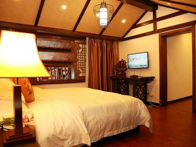
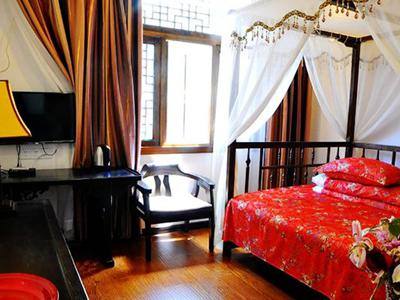

问答 > 去张家界3天怎么规划行程？当地消费如何？怎么省钱呢？
张家界 3个人打算5月从去张家界玩，3-4天线路怎么安排比较好？要花多少钱？据说可以住山顶、看日出，那个是怎么去的？去过的老铁分享下经验哦
难得和家人去张家界旅游几天，一行4人，下周左右过去，不知道那边具体怎么玩呢，花费大概要带多少，去过的朋友能推荐下怎么玩么？还有那边有什么要注意的吗？冷不冷呢？
考克斯 -1周前
5个回答
- 125
-
上个月和老婆女儿还有朋友一家人一起去了张家界，当时没考虑找旅行社，想自由行，玩的自在点嘛。我们玩了4天，看了不少攻略（想起来头都晕了...），后来在马蜂窝上找到一个叫阿妹阿哥的当地人（土家阿妹哦），她对当地非常了解，帮我们规划行程，帮我们省了不少钱，少走不少弯路（森林公园挺大的，可以玩2-3天，岔路比较多，5个门票站都可以进入，入口和出口要搞清楚哦）。4天下来花了不到1000元一个人，住的山顶5星客栈，早起看了日出，还吃了阿妹阿哥的农家菜，挺不错的。
版权名片?我是蚂蜂窝的忠实粉丝一枚，自己走过一些地方，写过几篇游记，但因为是屌丝，所以基本都是国内的路线，最长出行为四十天，一般长短线都有走过，以中长线为多，希望自己的一些经历和经验可以帮助到需要帮助的朋友！亲，你们4天具体行程是怎么玩的？有什么要特别注意的么？
申申loveLV.37
回复@安年：其实去张家界一般必去的景点就这几个：张家界森林公园、天门山、张家界大峡谷和凤凰，天门山和大峡谷我们选了天门山，大峡谷玻璃桥没天门山的玻璃栈道刺激，小孩子想走玻璃栈道，天门山景色好壮观。我们第1-2天玩森林公园，第3天玩天门山，第4天玩凤凰，其中一晚住在景区山顶，5星客栈哦，很惬意。阿妹阿哥人很好，一路很照顾我们，玩的也很自在，一个人花了也就1000，比自己玩省心省钱不少。再就是，你有啥问题也可直接问阿妹阿哥，她的微信： （人很好的，有关张家界的都知道）
安年LV.34
谢谢，我先加阿妹阿哥问问喏
- 14
-
我是成都青鸟自行车俱乐部的驴友，来张家界建议住山顶，好处很多的，因为森林公园的门票有效期是3天，这样就不用反复排队进出森林公园，要知道春节旺季一排队就是一两个小时呢。去年8月和女朋友去过张家界，不想折腾攻略游记，毕竟是答应她的蜜月之旅...找的就是楼上说的阿妹阿哥呢，帮我规划的行程和一楼的差不多，4天基本上必玩的都去了，总共也才花了不到1000。阿妹阿哥在张家界当地好像蛮出名的，网上口碑也不错。他们的服务确实是好，帮我们省心很多，也省钱不少，值得推荐。还特意给我们安排了土家族风格的蜜月房，布置的房间红红火火，很喜庆。女友都惊喜得直说好，哈哈。
这是她的微信： 楼主要去张家界的话，可以问问阿妹阿哥（特别热心的当地人）.
东东LV.34
住山上的话行程不赶吧？就想玩的轻松点
>唐不换LV.37
回复@东东：亲，住山顶就在景区呀，可以睡到自然醒，一点都不用赶时间，体验下农家客栈，晚上还可以数星星、看月亮，听听虫鸣鸟叫睡觉，简直就是向往的田园生活，要不是阿妹阿哥，真心不知道有这么个好线路玩法。
小倩LV.34
张家界森林公园到底有几个门呀？怎么进怎么出？
唐不换LV.37
回复@小倩：有5个门票站都可以进，森林公园门票站、武陵源标志门门票站、梓木岗、天子山镇门票站、杨家界门票站，现在森林公园门票站在修路，已经不能进了，建议绕路从武陵源标志门进入。森林公园很大，要搞清楚路线，一般都从入口和出口都不一样的，这个要注意哦。
- 41
-
我朋友是广州自驾去的张家界，回来以后说玩的累死了，那边景点多，而且比较分散。后面我去张家界就找到了网上口碑一直不错的阿妹阿哥，阿妹帮我们买票带路，玩的很轻松，而且还带我们爬了乌龙寨和空中田园，绝美的景点，都是旅游团肯定不去的景点，住山顶很清静，喜欢农家客栈，阿妹一路上都帮我们拍照，很热情可爱的一个女孩子，人很好。对了，她还特意带我们吃了当地最有名的土家三下锅，很好吃的一道菜，反正很开心的一次旅行吧，阿妹阿哥真的人不错，去张家界找她就对了~
Liu啦啦啦LV.34
哇塞看图我都留口水了，是哪家餐厅？正宗么？我下周去张家界玩
飞鱼LV.37
回复@Liu啦啦啦： 你算是问对人了，张家界三下锅很有名，但真正正宗的不一定都知道。哈哈，阿妹阿哥带我们吃的就是最正宗的富正毅三下锅，而且一定要去市区三角坪的这家店吃，这家成立快10年了，是总店，本地人都去这家，其它很多连锁的都是游客去的，这家最正宗呢。其它的三下锅还有胡师傅三下锅、老灶台三下锅，这些都是针对游客的，只有富正毅是本地人去的最多的。
Liu啦啦啦LV.34
原来如此，看来做吃货还是要多学习学习，的确找个当地人问问更靠谱点，马上加阿妹阿哥问问，是楼上那个微信吧？
小黄鹂LV.37
是的呢，我昨天联系了阿妹阿哥，刚到张家界机场，阿妹阿哥亲子开车来接我们，正准备去酒店（阿妹阿哥是个美女哦，哈哈...）
- 5
-
3月份从张家界回来的，当时找的就是阿妹阿哥带我们玩的。我们本来是计划自己玩的，看了几篇攻略游记后彻底头晕了...刚好有个哥们说联系过阿妹阿哥安排行程，觉得服务、人品都不错，而且我也觉得这种自由行很不错，就试着联系了一下阿妹阿哥，没想到她很快就把张家界景区的大概分布讲清楚，行程怎么规划、带什么东西都讲的很详细，真的非常专业!而且经常聊到凌晨一两点，她都会回我！在张家界的几天真的玩的超开心，其实旅行途中，景点并不重要，重要的是你和谁一起旅行，阿妹阿哥是个很豪爽、可爱的妹子，给我们唱山歌、讲湘西故事，大家就像朋友一样。去张家界的可以找她，服务和人品真的超赞的。

徐小兮LV.34
其实张家界适合自助游，想省心的玩的好点的可以直接找个当地向导，想怎么玩就怎么玩，想去哪去哪，比旅行社玩的要自在多了，现在的旅行社除了带你买东西还能干点别的么...
- 6
-
去年冬天去的张家界，值得一看，而且人也不多，更加推荐。我们去的时候也是找楼上说的阿妹阿哥导游俱乐部安排的呢，比自己玩省心很多，而且住山顶感觉很棒，睡到自然醒，不赶路，，早上还可以看日出，旅行就是要这么慢慢玩。这是我们住的客栈，环境不错吧。
荣京：LV.34
不错哦，就是不知道你说的山顶在哪里？可以看日出？
季恩妮LV.37
回复@荣京： 名字我忘了，因为那里是个山顶的村，我这种人方向感不好......天气好的话是可以看日出的，可惜那天早上有点下雨，没看到...想了解具体信息的话可以直接问阿妹阿哥嘛，这是微信：
- 11
-
反正我是觉得出去玩，千万不要在旅行社报团，全都是坑。上次我去九寨沟，报的一家旅行社的团，出发前什么都说的很好，价格也不便宜。等到九寨沟才知道，在景区的时间根本没多少，都是在购物店，我们没买什么东西，导游就立马翻脸，搞得一路玩的心情都没了。出门旅游，玩的开心是最重要的。
- 12
-
我们上次好多人去张家界本来是打算自己玩的，做了好多攻略都没搞清楚，最后索性在网上联系了很多人推荐的阿妹阿哥，没想到马上帮我们安排好了行程，他们真得还蛮专业的，据说以前都是导游出身的，都是张家界本地人，现在专门在携程、途牛网做当地向导自助游服务！服务也是很不错，对景区的讲解也很专业，楼主如果你要去张家界的可以联系她们。这个就是空中田园，远处就是百龙天梯，推荐你去看看。
端纳：LV.34
不错哦，就是不知道你说的山顶在哪里？可以看日出？
大鱼海棠LV.37
回复@端纳： 哈哈，那是真的有缘，不过他们在张家界做的挺好的，很多人推荐
飞鸟：LV.34
谢谢，我已经联系上了，让他给我们安排的行程，非常感谢，就等着去张家界啦
- 10
-
楼主，去张家界一定要吃三下锅和打鼓皮，超级推荐。不过他们那边重口味，不知道楼主受得了不？
周沫：LV.34
我也超爱辣的，朋友们也超爱
- 10
-
张家界确实挺美的，有机会还要再去趟（弥补玻璃桥没去的遗憾...）。我是去年11月底从张家界回来的，阿妹阿哥帮我们规划的行程，天门山大峡谷凤凰必去的都去了，玩的很开心，我们玩了4天，才花了不到1200，相当实惠哦（本来想着怎么也要2000多吧），毕竟张家界光门票就消费不低呢，感谢阿妹阿哥。喜欢这种自助游方式，你要去张家界的话也可以问问阿妹阿哥，这是微信： 扫一扫就能联系上了，张家界不懂的问她就对了。（没去成玻璃桥，天门山玻璃栈道还是不错的~）
周沫：LV.34
你们的4天的行程是怎么安排的呢?
小白兔LV.37
回复@周沫： 我们第一天晚的森林公园，第二天上午森林公园，下午玻璃桥。第三天上午天门山，下午出发去凤凰，第四天中午返程的，刚刚好

-
添加回答